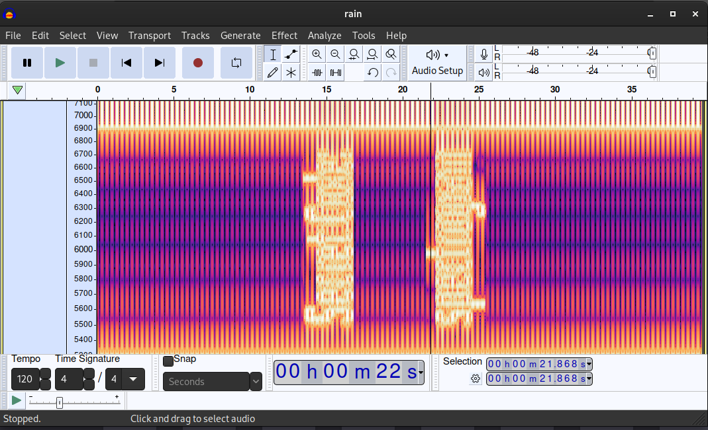

CyberEdu [https://app.cyber-edu.co] - UNbreakable - tsunami-researcher
Extract the 'rain.wav' file with 'unzip rain.zip'
Open it in Audacity and zoom, you will see: Secret Code: spectrogram.
After this, applay sha256 on `spectrogram`. You can use: https://emn178.github.io/online-tools/sha256.html.
Flag: `ctf{cc3a329919391e291f0a41b7afd3877546f70813f0c06a8454912e0a92099369}`.